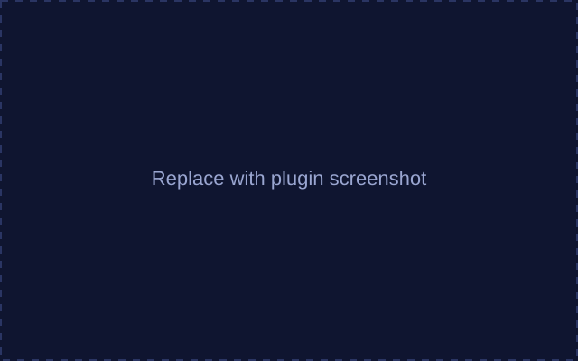

WaveBalance
Built most of the UI and added DSP features and changes on top of the original base version.
codwaves.comBuenos Aires, Argentina
Audio Software Engineer · C++ / JUCE
I build audio plugins, from DSP to the user interface. I studied acoustics and DSP, I've shipped commercial plugins, and I'm open to remote teams and freelance work.
Commercial plugins I worked on, with my part in each.
Built most of the UI and added DSP features and changes on top of the original base version.
codwaves.com
Built most of the UI and added DSP features and changes on top of the original base version.
codwaves.com
Worked on the UI of the FX section, plus smaller UI corrections across the plugin.

UI changes, and corrections to the DSP of features that were already implemented.
Plugins I designed and built on my own.

All-in-one toolbox plugin for mixing modern electric guitars. Built with C++ and JUCE.
View details →
Dual-stage dynamics processor combining classic FET and optical compression, with a swappable processing order. Built with C++ and JUCE.
View details →
Guitar and bass cabinet IR loader with extended processing features. Built with C++ and JUCE.
View details →
Aggressive vocal compressor for heavy vocals, with auto input leveling, EQ, saturation and other commonly used tools. Built with C++ and JUCE.
View details →